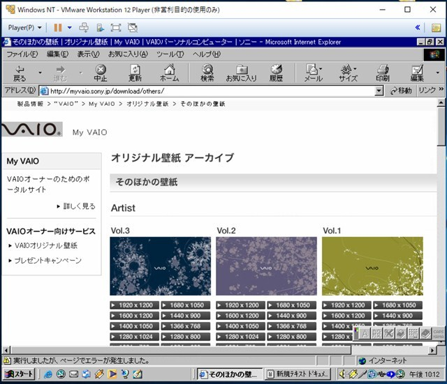

http://www.microsoft.com/japan/products/ntwork/
クリーンインストール後の手順
Microsoft(R) Windows NT(R) 4.0 日本語版 Service Pack 4 のダウンロード
ダウンロード先
Internet Explorer 4.01 SP2, 5.5 SP2, 6.0 SP1 Trekkerの小市民日記
Internet Explorer 3〜6ダウンロード先 紹介 サルベージだよう
Internet Explorer 5.5 日本語版 ダウンロードページ
NT SP6aを適用した後のHotfix
Microsoft TechNet
IE6で表示で閲覧できるサイトまとめ(随時更新) 
IE6である程度閲覧できるサイト
Windows NTが好き！SP1～SP7
VMware Player 6でWindows NT 4.0を動かす - Diary on wind
窓 NT4.0 | にわかSEは大忙し！（情報政策室ブログ）
Windows NT 4.0 Service Pack and Hotfixes
いまどきのNT4PC
QEMUでNT4/MIPS - 七誌の開発日記
Qemu（MIPS）にWindows NT 4.0をインストールする-Computer History Wiki
TechNet Online - 新規に Windows NT 4.0 システムをインストールする場合のセキュリティ保護 Microsoft Docs
Windows NT 4.0サーバーに.NET Framework 1.1をインストールする
NT4tips
Windows NT 4.0にインストールする
Microsoft techNet NT4 Hotfix
ソフト系
Resurrecting NT4 in 2016 - Windows 2000/2003/NT4 - MSFN
Problem with opera 10.63 on windows nt 4.0 - Windows 2000/2003/NT4 - MSFN
NT 系の更なる飛躍を遂げた Windows NT 4.0 Workstation の登場 - Windowsの核心
過去のNTセキュリティ関連情報
Microsoft Windows NT 4.0 / 2000 / XP セキュリティ対応状況
リアルプレーヤー